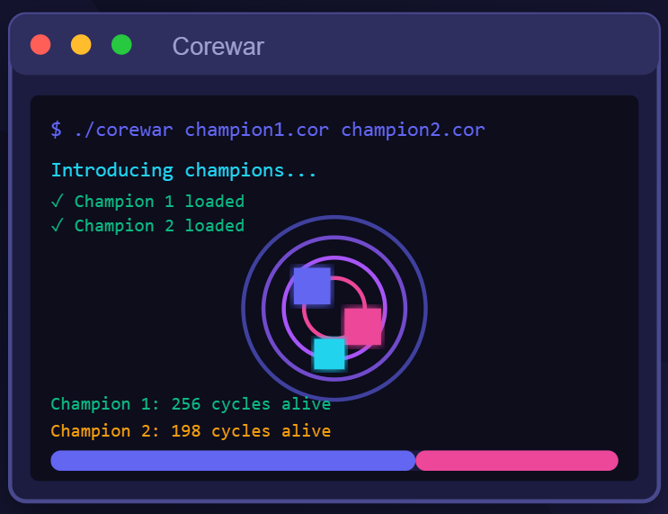
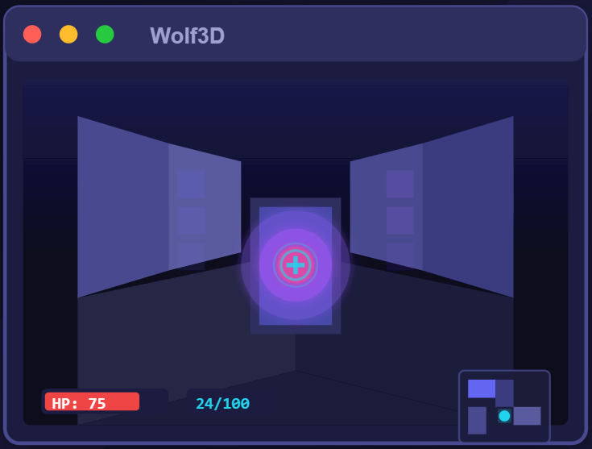
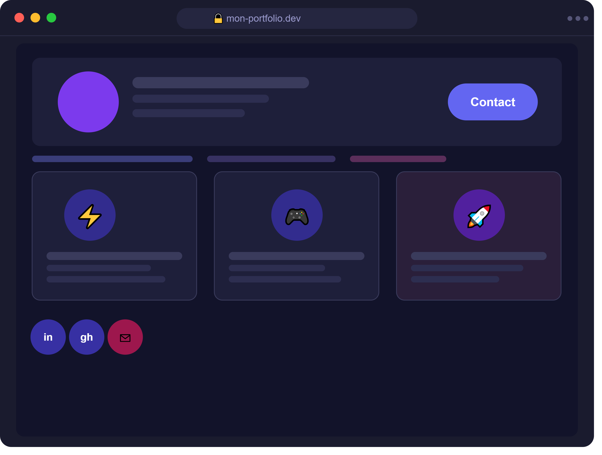
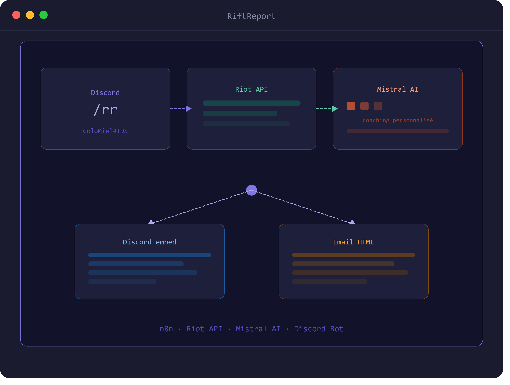
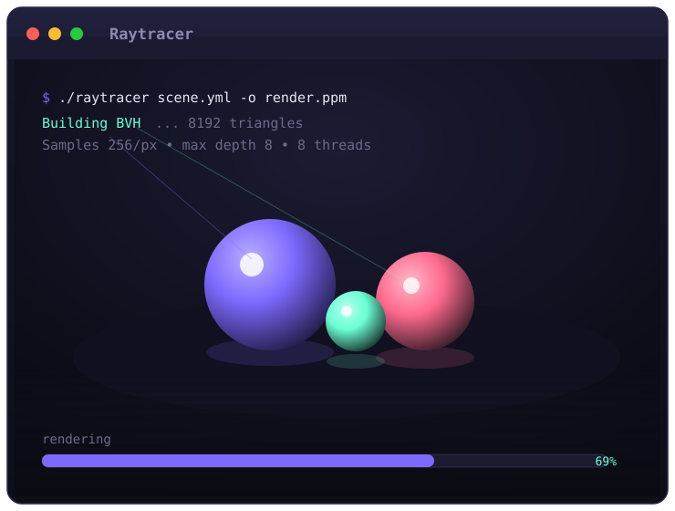
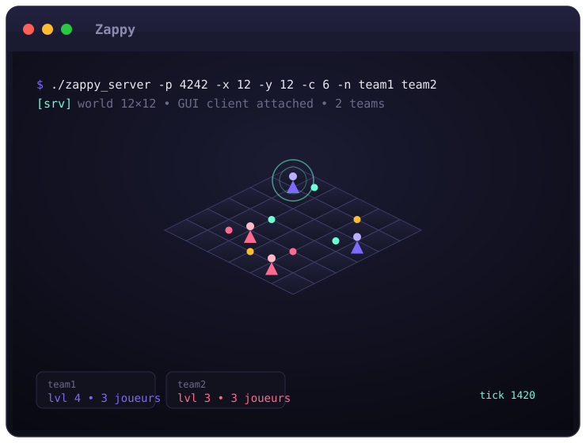

Ce que j'ai construit
Projets réalisés à Epitech et en dehors — des challenges techniques qui m'ont permis de progresser et d'explorer des domaines variés.

Corewar
Implémentation du jeu de programmation Corewar en C avec une interface visuelle dans le terminal grâce à Ncurses.
Voir sur GitHub →
Wolf3D
Reprise du célèbre Wolfenstein 3D avec du raycasting pur en C. Un projet gamedev qui touche aux maths et au bas niveau.
Voir sur GitHub →
Portfolio Web
Ce site — un portfolio moderne et responsive, incluant un onglet IA avec chat Mistral intégré. HTML, CSS vanilla, zéro framework.
Voir sur GitHub →
RiftReport n8n
Un coatch IA qui se base sur tes games lol pour te donner des conseil, il fonctionne via n8n est sur l'api mistral est discord
Voir sur GitHub →
Raytracer
Moteur de rendu par lancer de rayons en C++ : primitives, matériaux, réflexions et éclairage, avec accélération BVH et rendu multithread.
Voir sur GitHub →
Zappy
Jeu multijoueur en réseau : un serveur en C, un client IA autonome et une interface graphique, où plusieurs équipes s'affrontent pour faire évoluer leurs joueurs sur une carte partagée.
Voir sur GitHub →Stack & Technologies
Les outils avec lesquels je travaille au quotidien.